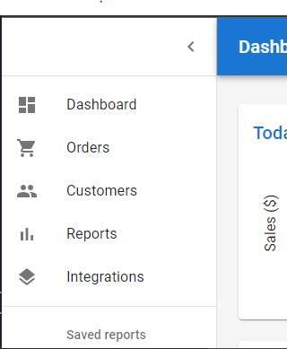
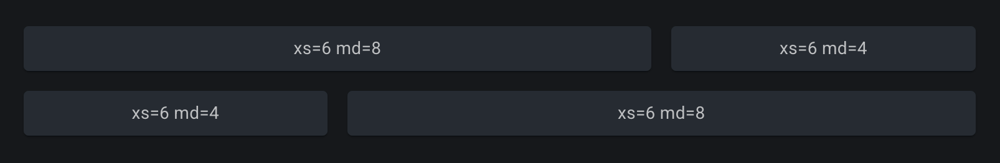
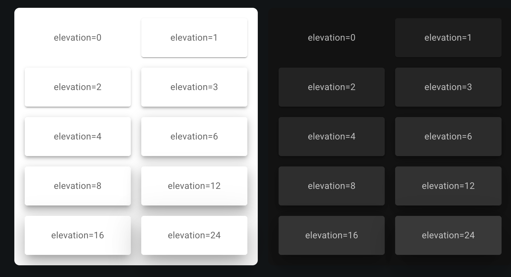
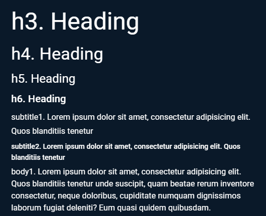
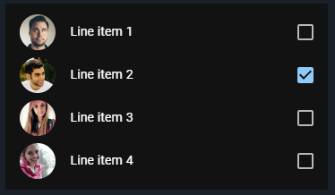
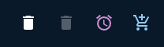

Web
React Essentials
## <i class="fas fa-tasks"></i> Overview of Today's Class - React - React Router - Material UI
React Basics
## <i class="fa-brands fa-react"></i> React JavaScript library for building user interfaces: - **Declarative**: makes it easy to reason about and modify an application. - **Rich ecosystem** of tools and libraries, hence often chosen over other frameworks This makes it the most popular JS framework for building user interfaces.
## <i class="fa-brands fa-react"></i> Component-Based Architecture Components are reusable pieces of code that represent a part of the user interface. Organized in a tree-like structure, similarly to HTML elements. The root component is named `App`. Facilitates complex user interfaces by composing smaller, reusable components.
## <i class="fa fa-hand-paper"></i> Developer Tools - Install the React Developer Tools extension for your browser. - Go to the [React website](https://react.dev) and open the developer tools. - Inspect the React component tree.
## <i class="fa fa-hand-paper"></i> Starter Project Given that CreateReactApp is now deprecated, it is recommended to either use a framework like NextJS or a tool like Vite. - Creating a project with NextJS: ```bash npx create-next-app@latest my-app ``` https://nextjs.org/docs/app/getting-started/installation - Create a new project using Vite: ```bash npm create vite@latest my-app --template react ``` https://react.dev/learn/build-a-react-app-from-scratch
## <i class="fa-brands fa-react"></i> JSX JSX (JavaScript XML) is a syntax extension to JavaScript that allows you to write HTML-like code in JavaScript files. ```jsx const element = <h1>Hello, world!</h1>; ``` JSX is not a requirement for using React, but it makes code more readable, and writing it feels like writing HTML. [Babel](https://babeljs.io/) compiles JSX down to React.createElement() calls.
## <i class="fa-brands fa-react"></i> React Component React components are reusable, self-contained pieces of UI that only need to be updated when its props or internal state change. Suppose we want to greet several people. In plain JSX, we would repeat ourselves: ```jsx <h1>Hello, Sara</h1> <h1>Hello, Cahal</h1> <h1>Hello, Edite</h1> ``` A (functional) **React component** lets us factor this out as a *custom HTML-like tag we define ourselves*. The simplest form is just a JavaScript function that returns a React element (JSX): ```jsx function Welcome({ name }) { return <h1>Hello, {name}</h1>; } // used like a tag <Welcome name="Sara" /> ``` By convention, **lowercase** tags are built-in HTML elements; **capitalized** tags are your own components. What a component returns is a **React element**, a plain JavaScript object describing what to render.
## <i class="fa-brands fa-react"></i> Props (properties) Each greeting needs a different name. We **parameterize** the component, just like a function parameter: ```jsx function Welcome({ name }) { return <h1>Hello, {name}</h1>; } <Welcome name="Sara" /> <Welcome name="Cahal" /> ``` The attributes you pass on the tag become keys on a single `props` object received by the component. Above we use **object destructuring** to pull out `name` directly. The non-destructured form is: ```jsx function Welcome(props) { return <h1>Hello, {props.name}</h1>; } ``` Props are **read-only** — a component must never modify its own props.
## <i class="fa-brands fa-react"></i> Under the hood: JSX → React elements JSX is **syntactic sugar** for calls to `React.createElement`, which return plain JS objects called **React elements**. ```jsx <Welcome name="Sara" /> // compiles to React.createElement(Welcome, { name: "Sara" }) ``` The second argument *is* `props`. This is also why capitalization matters: `createElement` treats lowercase strings (`"h1"`) as HTML tags and capitalized identifiers (`Welcome`) as your component function. **Conceptually**, a component was historically a class with `props`, `state`, and a `render()` method: ```jsx class Welcome extends React.Component { render() { return <h1>Hello, {this.props.name}</h1>; } } ``` Functional components are the modern form. React manages the instance for you, and state/lifecycle are exposed via hooks (covered later). Class components are [no longer recommended](https://react.dev/reference/react/Component) for new code.
## <i class="fa-brands fa-react"></i> Composing with components Just like HTML elements, React components can be composed into a tree-like structure. ```jsx function App() { return ( <div> <Welcome name="Sara" /> <Welcome name="Cahal" /> <Welcome name="Edite" /> </div> ); } ``` Here, the `App` component is composed of three `Welcome` components. It passes a different `name` attribute to each `Welcome` component. **Components must return a single root element**. This is why we wrap the `Welcome` components in a `div` element. The `div` element **is** rendered in the final output and can be replaced with a [React fragment](https://react.dev/reference/react/Fragment) (`<Fragment> (<>...</>)`) if we don't want artificial divs.
## <i class="fa-brands fa-react"></i> Children props React components can have content. This content is passed to the component as a special prop named `children`. In the example below, the `WelcomeDialog` component uses the `Dialog` component and passes content to it, which the latter displays in a `<div>`. ```jsx const Dialog = (props) => <> {props.children} </>; const WelcomeDialog = () => { return <Dialog> <h1>Welcome</h1> <p>Thank you for visiting our website!</p> </Dialog>; } export default WelcomeDialog; ``` Here, the `props.children` property contains the `h1` and `p` elements. This allows decoupling the components from their content and make them more reusable.
## <i class="fa-brands fa-react"></i> Named children props Children components can also be passed as named props. ```jsx const Dialog = ({title, body}) => { return <> <header>{title}</header> <body>{body}</body> </>; } const WelcomeDialog = () => { return <Dialog title={<h1>Welcome</h1>} body={<p>Thank you for visiting our website!</p>} />; } export default WelcomeDialog; ``` In the example above, object destructuring is used to extract the named properties `title` and `body`.
## <i class="fa-brands fa-react"></i> Rendering lists Including a list of JSX nodes in a component will render them all in that order. ```jsx // props has a texts property, which is an array of strings const MyListComponent = (props) => { const components = props.texts.map((text) => <li>{text}</li>); return <ul>{ components }</ul>; } export default MyListComponent; // usage function App() { const myList = ["Milk", "Bread", "Cheese"]; return <MyListComponent texts={myList} /> } ``` Here, the `MyListComponent` component renders a list of `li` elements.
## <i class="fa-brands fa-react"></i> React Tricks You will often find react components written in a concise way. ```jsx // texts is an array of strings, such as ["Hello", "World"] const MyListComponent = ({texts}) => { // This will return the result of texts.map if texts is defined return <ul> { texts && texts.map((text) => <li>{text}</li>) } </ul>; } export default MyListComponent; ``` In this example: - Object destructuring is used to extract the `texts` property from the props object. - `&&` is used to render the list only if the `texts` property is defined. - The `texts` property is mapped to a list of `li` elements. Notes: Logical AND (`&&`) evaluates operands from left to right, returning immediately with the value of the first [falsy](https://developer.mozilla.org/en-US/docs/Glossary/Falsy) operand it encounters; if all values are [truthy](https://developer.mozilla.org/en-US/docs/Glossary/Truthy), the value of the last operand is returned. So `&&` returns the value of the last operand if they are all "truthy". If a value can be converted to `true`, the value is so-called [truthy](https://developer.mozilla.org/en-US/docs/Glossary/Truthy). If a value can be converted to `false`, the value is so-called [falsy](https://developer.mozilla.org/en-US/docs/Glossary/Falsy). https://developer.mozilla.org/en-US/docs/Web/JavaScript/Reference/Operators/Logical_AND
## <i class="fa-brands fa-react"></i> List item keys React uses the `key` attribute to identify each element in a list, allowing efficient updates of the DOM. If not specified, React will use the index of the element, and display a warning in the console. Here, we explicitly set the `key` to the index of the element. ```jsx // texts is an array of strings, such as ["Hello", "World"] const MyListComponent = ({texts}) => { return <ul> { texts && texts.map((text, index) => <li key={index}>{text}</li>) } </ul>; } export default MyListComponent; ``` **This is poor practice** : React uses the `key` attribute to know which elements to update, so it should **uniquely identify the element** over time. An index might suddenly point to a different component if we update the list, e.g. if we remove elements when filtering. An index does not uniquely identify a component in a list. An id based approach is recommended, where the key is a unique identifier for each element of the list (e.g. a country id when rendering a list of countries). <div class="detail"> https://react.dev/learn/rendering-lists <br/> For a more in depth explanation, see https://www.developerway.com/posts/react-key-attribute </div>
Managing state & hooks
## <i class="fa-brands fa-react"></i> State and lifecycle Props are read-only, but components can maintain their own internal state. The `state` of a component is an object that contains data relevant to the component. ```jsx class Clock extends React.Component { constructor(props) { super(props); this.state = {date: new Date()}; } render() { return ( <div> <h1>Hello, world!</h1> <h2>It is {this.state.date.toLocaleTimeString()}.</h2> </div> ); } } ``` Here, the `state` object is initialized in the constructor. Whenever the state changes, the component is re-rendered through the `render` method.
## <i class="fa-brands fa-react"></i> Class component state and lifecycle The `state` **should only be updated using the `setState` method** inherited from the `Component` class. ```jsx[1-5,15-23|6-14] class Clock extends React.Component { constructor(props) { super(props); this.state = {date: new Date()}; } tick() { // function that updates the state via setState this.setState({date: new Date()}); } componentDidMount() { this.timerID = setInterval(() => this.tick(), 1000); } componentWillUnmount() { clearInterval(this.timerID); } render() { return ( <div> <h1>Hello, world!</h1> <h2>It is {this.state.date.toLocaleTimeString()}.</h2> </div> ); } } ``` Here, `componentDidMount` and `componentWillUnmount` describe the **lifecycle** of the component. - The `componentDidMount` method is called after the component is rendered for the first time. - The `componentWillUnmount` method is called before the component is removed from the DOM.
## <i class="fa-brands fa-react"></i> Functional component state and lifecycle A functional component manages its **lifecycle** using *hooks*. ```jsx[1-17|2-5|6-9|1-17] function Clock(props) { const [date, setDate] = useState(new Date()); // define state and update function function tick() { setDate(new Date()); } useEffect(() => { // function to be called on first render const timer = setInterval(() => tick(), 1000); return () => clearInterval(timer); // cleanup function, called when component removed }, []); //when called with an empty array as a dependency, useEffect will be called only after the first render return ( <div> <h1>Hello, world!</h1> <h2>It is {date.toLocaleTimeString()}.</h2> </div> ); } ``` Here, the lifecycle methods are replaced by the `useState` and `useEffect` hooks to achieve a similar result. - The `useState` hook is used to initialize the state and to define the function that will update the state. - The `useEffect` hook is called after the component is rendered for the first time (similar to `componentDidMount`). - The optional cleanup function retuned by the setup function is called when the component is removed from the DOM. - More on `useEffect` later. https://codepen.io/binaerbaum/pen/vEBgVKv Notes: The second array parameter of `useEffect` can be used to specify when the effect should be called. If it is empty, the effect will only be called once, after the first render. If it contains variables, the effect will be called whenever one of them changes. If we don't pass an empty array as dependency to the `useEffect` hook, it will be called after each render, so we would clear/set the timer at each render, which is not efficient.
## <i class="fa-brands fa-react"></i> The `useState` hook The `useState` hook is used to initialize and update the state. It takes a single argument: the initial value of the state object It returns an array of two elements: (1) the current state, (2) a function to update the state. ```jsx import React, { useState } from 'react'; // must be imported const Counter = () => { const [count, setCount] = useState(0); // initialize counter to 0 return <div> <p>You clicked {count} times</p> <button onClick={() => setCount(count + 1)}> Increment </button> </div>; } ``` - Always use the returned setter (here `setCount`) function to update the state. - Never modify the state directly (`count += 1`). - State will not change immediately after the setter call (updates are batched).
## <i class="fa-brands fa-react"></i> Multiple state variables The `useState` hook can be called multiple times to initialize multiple state variables. ```jsx import React, { useState } from 'react'; // must be imported const InputText = ({label, value}) => { const [value, setValue] = useState(value); const [error, setError] = useState(false); const onChange = (e) => setValue(e.target.value); const onBlur = () => setError(value.length === 0); // when we loose focus return <> <label>{label}</label> <input type="text" value={value} onChange={onChange} onBlur={onBlur} /> {error && <p>This field is required</p>} </>; } ```
## <i class="fa-brands fa-react"></i> Batching and reconciliation In the following example, the onChange callback makes two calls to the state setter functions (`setValue`, `setError`) . Will the component be re-rendered twice? ```jsx import React, { useState } from 'react'; // must be imported const InputText = ({label, value}) => { const [value, setValue] = useState(value); const [error, setError] = useState(false); const onChange = (e) => { setValue(e.target.value); setError(e.target.value.length === 0); } return <> <label>{label}</label> <input type="text" value={value} onChange={onChange} /> {error && <p>This field is required</p>} </>; } ``` No, thanks to the **batching** of the state updates and a mechanism called reconciliation (checking what has changed, and applying the changes), React should only re-render the component once. Notes: React Reconciliation is the process by which React determines the changes made to the virtual DOM and applies those changes efficiently to the actual DOM. It ensures that the user interface remains synchronized with the underlying data, minimizing unnecessary updates and rendering only the necessary components.
## <i class="fa-brands fa-react"></i> The `useReducer` hook The `useReducer` hook is an alternative to the `useState` hook when you have complex state logic. `useReducer` accepts: <br/> (1) a reducer function of type `(state, action) => newState` <br/> (2) an initial state and returns: <br/> (1) the current state <br/> (2) a dispatch method that takes an action as param and allows updating the state (by calling the reducer). ```js import React, { useReducer } from 'react'; // called internally by dispatch with the action as param function counterReducer(state, action) { switch (action.type) { case 'increment': return { count: state.count + 1 }; case 'decrement': return { count: state.count - 1 }; //... } } function Counter() { const [state, dispatch] = useReducer(counterReducer, { count: 0 }); //reducer fct and initial state return (<div> <h1>Count: {state.count}</h1> <button onClick={() => dispatch({ type: 'increment' })}>Increment (+)</button> <button onClick={() => dispatch({ type: 'decrement' })}>Decrement (-)</button> <!-- ... --> </div>); } ``` https://react.dev/reference/react/useReducer
## <i class="fa-brands fa-react"></i> `useReducer`'s `dispatch` The `dispatch` method can be called to update the state. It takes an action object as argument, and returns the new state. It internally calls the reducer function with the current state and the action object. ```jsx <button onClick={() => dispatch({ type: 'increment' })}>Increment (+)</button> ``` By convention, the action object has a `type` property that describes the action, and other properties that describe the payload of the action.
## <i class="fa-brands fa-react"></i> Lifting states up It is a good practice to **keep the state as close to the components that need it**. However, it is common to have multiple components that need to share the same state. The **Lifting states up pattern** is a way to share state between components. The idea is to : - **Move the state up** to the closest common ancestor of the components that need it. - **Pass the state down as props** to the components that need it.
## <i class="fa fa-hand-paper"></i> Lifting states up In this exemple, TodoApp is the common ancestor of TodoList and TodoForm.<br/> `todos` is the state that is **moved up** to TodoApp and **passed down as props** to TodoList. ```jsx import React, { useState } from 'react'; const TodoApp = () => { const [todos, setTodos] = useState([]); const addTodo = (todo) => setTodos([...todos, todo]); return <><TodoForm addTodo={addTodo} /><TodoList todos={todos} /></>; } const TodoList = ({todos}) => <ul>{todos.map((todo, index) => <li>{todo}</li>)}</ul>; const TodoForm = ({addTodo}) => { const [value, setValue] = useState(''); // may have its internal state const onChange = (e) => setValue(e.target.value); // update state when form value changes const onSubmit = (e) => { e.preventDefault(); if (!value) return; addTodo(value); setValue(''); } return <form onSubmit={onSubmit}> <input type="text" value={value} onChange={onChange} /> <button type="submit">Add Todo</button> </form>; } ```
## <i class="fa fa-hand-paper"></i> Lifting states up `TodoForm` does not need to know about the state of TodoList, it only needs to know how to add a todo. Therefore, it only needs to know about the `addTodo` function. Avoid passing down the `setTodo` function to the `TodoForm` component, it would allow the `TodoForm` to replace all the todos instead of adding a new one. Create a new `addTodo` function that only adds a todo to the list of todos. ```jsx import React, { useState } from 'react'; const TodoApp = () => { const [todos, setTodos] = useState([]); const addTodo = (todo) => setTodos([...todos, todo]); return <><TodoForm addTodo={addTodo} /><TodoList todos={todos} /></>; } const TodoList = ({todos}) => <ul>{todos.map((todo, index) => <li>{todo}</li>)}</ul>; const TodoForm = ({addTodo}) => { const [value, setValue] = useState(''); // may have his internal state const onChange = (e) => setValue(e.target.value); const onSubmit = (e) => { e.preventDefault(); if (!value) return; addTodo(value); setValue(''); } return <form onSubmit={onSubmit}> <input type="text" value={value} onChange={onChange} /> <button type="submit">Add Todo</button> </form>; } ```
Effect hooks
## <i class="fa-brands fa-react"></i> The `useEffect` hook The `useEffect` hook is used to run a side effect when the component renders. It takes two arguments: (1) a setup function that runs when the component is first rendered and (2) an array of dependencies. The setup function can optionally return a cleanup function that is called when the component is re-rendered because a dependency changed or is removed (unmounts). Depending on the dependencies, the `useEffect` hook will run one or several times. ```jsx import { useState, useEffect } from "react"; import ReactDOM from "react-dom/client"; function Counter() { const [count, setCount] = useState(0); const [calculation, setCalculation] = useState(0); useEffect(() => { setCalculation(() => count * 2); // could also write setCalculation(count * 2) }, [count]); // <- useEffect will run whenever the count variable changes return ( <> <p>Count: {count}</p> <button onClick={() => setCount((c) => c + 1)}>+</button> <p>Calculation: {calculation}</p> </> ); } const root = ReactDOM.createRoot(document.getElementById('root')); root.render(<Counter />); ``` `useEffect` allows you to run side effects within your component. Common side effects are: Fetching data from an API, subscribing to a stream of data, or manipulating the DOM, etc. Notes: React calls your setup and cleanup functions whenever it’s necessary, which may happen multiple times: Your setup code runs when your component is added to the page (mounts). After every re-render of your component where the dependencies have changed: First, your cleanup code runs with the old props and state. Then, your setup code runs with the new props and state. Your cleanup code runs one final time after your component is removed from the page (unmounts).
## <i class="fa-brands fa-react"></i> More on the `useEffect` hook The behavior of the `useEffect` can be controlled by passing a second argument to it. This argument is an array of dependencies. ```js useEffect(() => { // runs on every render }); useEffect(() => { // runs on first render }, []); useEffect(() => { // runs on first render and when any of dependencies changes }, [dependency1, dependency2]); ``` The callback will be called - on first render - each time a dependency changes, if a dependency array is provided - on every render if no dependency array is provided
Memoisation
## <i class="fa-brands fa-react"></i> When does a component re-render? A **render** is React calling the component function again to compute new JSX. A component re-renders when: 1. Its own state changes (`setX(...)`) 2. Its **parent** re-renders: this propagates down 3. A **context** it reads has a new `value` reference **The cascade rule**: by default, when a component re-renders, **all of its descendants re-render too**, even if their props didn't change. The cascade flows *down*, not up or sideways. ``` State change in <Main>: <App> ← stays ├─ <Nav> ← stays (sibling of an ancestor) └─ <Page> ← stays (ancestor) ├─ <Side> ← stays (sibling of Main) └─ <Main> ← re-renders (state changed here) └─ <List> ← re-renders (descendant) ``` Re-rendering a function is cheap: React diffs the new tree against the old one (*reconciliation*) and only touches the DOM where things actually changed. The cascade only becomes a problem when a descendant does **expensive work**. That's what `useMemo`, `React.memo`, and `useCallback` are for as we will see.
## <i class="fa-brands fa-react"></i> Caching values - `useMemo` hook By default, when a component re-renders, React re-renders all of its children recursively. <br/> This can be problematic if components do expensive computations or slow operations like network calls. The `useMemo` hook is used to **memoize** (cache) values (or function definitions) between renders. It takes a computing function and an array of dependencies as arguments, and returns the value of the function. <br/> The value is only recomputed when one of the dependencies changes. ```js export default function AccountsList({ accounts, theme }) { // Tell React to cache your calculation between re-renders... const accountsWithPerformance = useMemo( () => computePerformance(accounts), // expensive operation [accounts] // ...so as long as these dependencies don't change... ); return ( <div className={theme}> <List items={accountsWithPerformance} /> </div> ); } ``` Without `useMemo` the expensive performance calculation would be re-computed whenever `theme` changes even if the list of accounts doesn't change. Notes: `useMemo` can also be used to prevent effects from firing too often by caching their dependencies.
## <i class="fa-brands fa-react"></i> Preventing unnecessary renders - `React.memo()` By default, when a component re-renders, React re-renders all of its children recursively, even if their props haven't changed. `memo()` lets us skip re-rendering a component when its props are unchanged. It returns a memoized version of the component. ```js import React, { memo } from 'react'; // Memoized child — only re-renders when its props change const Greeting = memo(function Greeting({ name }) { useEffect(() => { console.log('Greeting rendered'); }); return <h3>Hello, {name}!</h3>; }); function App() { const [count, setCount] = useState(0); const [name, setName] = useState('Sara'); useEffect(() => { console.log('App rendered'); }); return ( <div style={{ fontFamily: 'sans-serif', padding: 16 }}> <p>Parent count: {count}</p> <button onClick={() => setCount(c => c + 1)}> Increment count (parent only) </button> <button onClick={() => setName(n => n === 'Sara' ? 'Cahal' : 'Sara')}> Toggle name (passed to child) </button> <Greeting name={name} /> </div> ); } ReactDOM.createRoot(document.getElementById('root')).render(<App />); ```
## <i class="fa-brands fa-react"></i> Caching function definitions - `useCallback` hook The `useCallback` hook is used to memoize **functions definitions**. Just as `{}` creates a different object, function declarations like "`function() {}`" and expressions like "`() => {}`" produce a different function (address) on every re-render. Using `useCallback`, function definitions can be cached and will not change between renders. ```js const Button = memo(function Button({ onClick }) { useEffect(() => { console.log('Button rendered'); }); return <button onClick={onClick}>+1</button>; }); function App() { const [count, setCount] = useState(0); const [name, setName] = useState('Sara'); // Stable across renders — created once, deps are [] const increment = useCallback(() => setCount(c => c + 1), []); useEffect(() => { console.log('App rendered'); }); return ( <div style={{ fontFamily: 'sans-serif', padding: 16 }}> <input value={name} onChange={e => setName(e.target.value)} placeholder="type to re-render the parent" /> <p>{name}, count: {count}</p> <Button onClick={increment} /> </div> ); } ReactDOM.createRoot(document.getElementById('root')).render(<App />); ``` By combining `useCallback` and `memo` we prevent the child component from re-rendering as `increment` remains stable. Because the passed function is cached by the parent and does not change across re-renders unless its dependency changes (which is none). Notes: `memo` alone would not have been enough to prevent a re-render of the child component (Button) because at each re-render of the parent component it would pass it a new function definition. `useCallback` is a simplified way of using `useMemo` under the hood. ```js // Simplified implementation (inside React) function useCallback(fn, dependencies) { return useMemo(() => fn, dependencies); } ```
Context
## <i class="fa-brands fa-react"></i> Context A `Context` lets a parent make a value available to any component in the tree below it, no matter how deep, without passing props down at every level (*"prop drilling"*). **Use it for** widely-needed, slow-changing values: - Current user / authentication - Theme (dark / light) - Locale and translations **Don't use it for** general application state or frequently-changing values: every consumer re-renders when the context value changes. Context is a tool for avoiding prop drilling, **not** a state-management library. `createContext(defaultValue)` returns a context object with: - `Provider` — wraps a subtree and supplies a value - `Consumer` — legacy, only useful for class components Notes: The default value is used only when a consumer has no matching `Provider` above it in the tree.
## <i class="fa-brands fa-react"></i> `Provider` and `useContext` The `Provider` component makes a value available to all components in its subtree, its **scope**. It can wrap the whole app or any subset. ```jsx <MyContext.Provider value={someValue}> {/* anything in here can read someValue */} </MyContext.Provider> ``` In any function component within that scope, we can read the value with the `useContext` hook: ```jsx const value = useContext(MyContext); ``` Class components can use `<MyContext.Consumer>` instead, but functional components + `useContext` is the modern approach. **Warning**: every consumer re-renders whenever the provider's `value` reference changes. So we should keep `value` stable, as shown next.
## <i class="fa-brands fa-react"></i> Declaring a context Contexts are usually declared in a separate file. A wrapping `Provider` component owns the state and exposes it as the context's value. Below is an example of a context (`UserContext`) defined in `./context/UserContext.js`: ```js import { createContext, useState, useMemo } from 'react'; export const UserContext = createContext(); export const UserProvider = ({ children }) => { const [user, setUser] = useState({ name: 'John' }); const setName = (name) => setUser({ ...user, name }); const value = [user, setName]; return ( <UserContext.Provider value={value}> {children} </UserContext.Provider> ); } ``` - `createContext()` creates and exports the context object. - `UserProvider` wraps `UserContext.Provider` and owns the state. - We could use `useMemo` to keeps the `value` array stable.
## <i class="fa-brands fa-react"></i> Define the scope of the provider As the `UserContext` contains relevant information for the entire application, we wrap the `App` component with the `UserProvider` component. ```js import { UserProvider } from './context/UserContext'; const root = ReactDOM.createRoot(document.getElementById('root')); root.render( <UserProvider> <App /> </UserProvider> ); ```
## <i class="fa-brands fa-react"></i> Consume the context It is now possible to consume the context in any component, e.g. a `User` component, with the `useContext` hook. ```js import { UserContext } from './context/UserContext'; const User = () => { const [user, setName] = useContext(UserContext); // will get the context from the nearest parent return ( <div> <p>Your current user name : {user.name}</p> <div> <label for="user">Change it :</label> <input id="user" value={user.name} onChange={(e) => setName(e.target.value)} /> </div> </div> ); } ``` https://codepen.io/editor/binaerbaum/pen/019dfa71-c675-76bc-ba80-5504f3b5294c
## <i class="fa fa-hand-paper"></i> `useReducer` hook and context A hint for the lab... ;) ```js function reducer(state, action) { switch (action.type) { case 'play-track': { return { ...state, status: 'playing' } } case 'pause-track': { return { ...state, status: 'paused' }; } /* ... */ default: return state; } } export const MusicProvider = ({ children }) => { const [music, dispatch] = useReducer(reducer, { status: 'paused', current: undefined, queue: [] }); return <MusicContext.Provider value={{ music, dispatch }}> { children } </MusicContext.Provider>; }); ```
## <i class="fa fa-hand-paper"></i> Combine the context with `useReducer` Another hint for the lab... ;) ```js import React, { useContext } from 'react'; import { IconButton } from '@mui/material'; import PlayArrowIcon from '@mui/icons-material/PlayArrow'; import PauseIcon from '@mui/icons-material/Pause'; import MusicContext from './MusicContext'; const MusicPlayer = () => { const { music: { current: track, status }, dispatch } = useContext(MusicContext); const handlePausePlayToggle = () => { if (status === 'paused' && track && track.preview ) { dispatch({ type: 'play-track' }); } else { dispatch({ type: 'pause-track' }); } }; return ( <IconButton aria-label="play/pause" onClick={clickPausePlayToggle}> {status === 'paused' ? <PlayArrowIcon /> : <PauseIcon />} </IconButton> ) } ```
React Router
## <i class="fa-solid fa-route"></i> React Router `react-router` provides routing for React applications: declaring routes, navigating between them, and keeping the URL in sync with what is rendered. It is platform-agnostic — web, React Native, server-side rendering with Node.js. Since **v7** (Nov 2024), `react-router` is a **single package** that covers all platforms. Older code may still import from `react-router-dom`, which now simply re-exports `react-router` for backwards compatibility. ```bash npm install react-router ``` Notes: In this course we always import from `react-router`. If you find a tutorial that uses `react-router-dom`, the API is the same — just the import path differs.
## <i class="fa-solid fa-route"></i> Single Page Applications In a Single Page Application (SPA), the server only delivers a single HTML page. The URL changes as the user navigates, but the page is **never reloaded**. `react-router` uses the **HTML5 History API** to update the URL and listen for back/forward navigation, then re-renders the right components for the current location. This gives an app-like experience while keeping bookmarkable, shareable URLs.
## <i class="fa-solid fa-route"></i> Main building blocks - `BrowserRouter` — wraps the app and connects to the History API - `Route` — declares a `path` and the `element` to render - `Routes` — picks the matching `Route` for the current URL - `Link` / `NavLink` — declarative navigation - `useParams`, `useNavigate` — hooks to read URL params and navigate from code - `Outlet` — placeholder where nested routes are rendered
## <i class="fa-solid fa-route"></i> Router `BrowserRouter` is the top-level component that wraps your application. It keeps track of the current URL and re-renders when it changes. ```jsx import { BrowserRouter } from 'react-router'; function App() { return ( <BrowserRouter> {/* the rest of the app */} </BrowserRouter> ); } ```
## <i class="fa-solid fa-route"></i> Routes and Route A `Route` declares which **element** to render for a given **path**. All routes must be wrapped in a `Routes` block, which selects the best match for the current URL. ```jsx import { BrowserRouter, Routes, Route } from 'react-router'; import HomePage from './components/HomePage'; import UserProfile from './components/UserProfile'; function App() { return ( <BrowserRouter> <Routes> <Route path="/" element={<HomePage />} /> <Route path="/users/:username" element={<UserProfile />} /> </Routes> </BrowserRouter> ); } ``` Note that a `Route` will not create any `<a>` links ! For that we need a `Link` component, as shown next. Notes: In v6+, `Route` takes the rendered JSX through the **`element`** prop, not the older `component={Component}` form. The `:username` segment is a route parameter and will be available via `useParams`.
## <i class="fa-solid fa-route"></i> Link `Link` renders an `<a>` tag that navigates **without reloading the page**. ```jsx import { Link } from 'react-router'; function Nav() { return ( <nav> <Link to="/">Home</Link> <Link to="/users/johndoe">John Doe's Profile</Link> </nav> ); } ``` We could thus define the navigation for our application : ```jsx function App() { return ( <BrowserRouter> <Nav /> <!-- our navigation component --> <Routes> <Route path="/" element={<HomePage />} /> <Route path="/users/:username" element={<UserProfile />} /> </Routes> </BrowserRouter> ); } ``` Avoid plain `<a href="...">` for in-app navigation: it triggers a full page reload and discards your React state.
## <i class="fa-solid fa-route"></i> NavLink — active styling `NavLink` is a `Link` that knows whether it points to the **active** route. Useful for navigation menus. ```jsx import { NavLink } from 'react-router'; <NavLink to="/" className={({ isActive }) => isActive ? 'active' : ''} > Home </NavLink> ``` The `className` and `style` props accept a function receiving `{ isActive, isPending }`, so you can style the link based on the navigation state.
## <i class="fa-solid fa-route"></i> Index routes & 404 catch-all An **index route** matches a parent's path exactly (no extra segment). A `*` route matches anything no other route caught — typical for a 404 page. ```jsx <Routes> <Route path="/" element={<Layout />}> {/* rendered when the URL is exactly "/" */} <Route index element={<HomePage />} /> <Route path="users/:username" element={<UserProfile />} /> </Route> {/* anything else */} <Route path="*" element={<NotFound />} /> </Routes> ``` Notes: The order of `Route` children does not matter — `Routes` always picks the most specific match. The `*` route only fires when nothing else does.
## <i class="fa-solid fa-route"></i> Nested routes & `Outlet` Routes can be **nested** to share a common layout (sidebar, header, etc.). The parent route renders an `<Outlet>` placeholder where the matching child route is injected. ```jsx import { Outlet } from 'react-router'; function DashboardLayout() { return ( <div> <Sidebar /> <main><Outlet /></main> </div> ); } <Routes> <Route path="/dashboard" element={<DashboardLayout />}> <Route index element={<Overview />} /> <Route path="settings" element={<Settings />} /> <Route path="users/:id" element={<UserDetail />} /> </Route> </Routes> ``` Visiting `/dashboard/settings` renders `DashboardLayout` with `Settings` inside its `<Outlet>`.
## <i class="fa-solid fa-route"></i> Reading URL parameters Use the `useParams` hook to read the `:placeholders` declared in a route path. Given our user profile route: ```jsx <Routes> <Route path="/users/:username" element={<UserProfile />} /> </Routes> ``` We can use `useParams` to read the `:username` placeholder: ```jsx import { useParams } from 'react-router'; function UserProfile() { const { username } = useParams(); return <h1>{username}'s profile</h1>; } ``` Visiting `/users/sara` will assign `'sara'` to `username`.
## <i class="fa-solid fa-route"></i> Programmatic navigation Use the `useNavigate` hook to navigate from code (after a form submit, an API call, etc.). ```jsx import { useNavigate } from 'react-router'; function LoginButton() { const navigate = useNavigate(); const handleClick = () => { // ... do login work ... navigate('/users/johndoe'); // push a new entry // navigate(-1); // go back // navigate('/', { replace: true }); // replace, don't push }; return <button onClick={handleClick}>Log in</button>; } ``` Notes: In older code (≤ v5) you'll see `useHistory()` and `history.push()`. These were **replaced by `useNavigate`** in v6 and removed.
## <i class="fa-solid fa-route"></i> Going further — data routers For non-trivial apps, the React Router team recommends the **data router** API: routes are described as a config object, and each route can declare a `loader` (data fetching before render) and an `action` (form handling). ```jsx import { createBrowserRouter, RouterProvider } from 'react-router'; const router = createBrowserRouter([ { path: '/', element: <HomePage /> }, { path: '/users/:username', element: <UserProfile />, loader: ({ params }) => fetch(`/api/users/${params.username}`), }, { path: '*', element: <NotFound /> }, ]); function App() { return <RouterProvider router={router} />; } ``` Benefits: data is fetched **in parallel** with rendering, built-in pending and error states, and easier code-splitting. Notes: You don't need this for the lab — declarative `<Routes>` is enough. But it's the API you'll see in modern tutorials and in production apps. Read more at https://reactrouter.com/start/data
## <i class="fa-solid fa-route"></i> Sources - https://reactrouter.com — official documentation - https://reactrouter.com/start/declarative — the API used in this lecture - https://reactrouter.com/start/data — data router API - https://www.npmjs.com/package/react-router
Material UI (MUI)
## <i class="fa-solid fa-boxes-stacked"></i> Material UI (MUI) Material-UI (MUI) is an open-source UI component library for React. It is a set of pre-made reusable components that help you build modern UI without extensive knowledge of CSS. It implements the `Material Design` design language developed by Google. ```node npm install @mui/material @emotion/react @emotion/styled ```
## <i class="fa-solid fa-boxes-stacked"></i> A rich collection of components https://mui.com/material-ui/ They can be broadly categorized into : Navigation, Layout, Surfaces, Data display, Input, and other components. Let's take a look at some of them.
## <i class="fa-solid fa-boxes-stacked"></i> Navigation - Drawer - Menu - etc.
## <i class="fa-solid fa-boxes-stacked"></i> Drawer (Navigation) <p></p> Sidebars (Navigation Drawers) that are anchored to a side of the screen. They can be permanently or temporarily displayed and have fixed size. Useful for displaying navigation menu, important notifications or other things that should be accessible throughout the application. `Drawer` uses `Paper` container for visual appearance. https://mui.com/material-ui/react-drawer/
## <i class="fa-solid fa-boxes-stacked"></i> Menu (Navigation) Menu contains a list of actions displayed on a temporary surface. You can open the menu using a button or any other clickable component. https://mui.com/material-ui/react-menu/
## <i class="fa-solid fa-boxes-stacked"></i> Layout - Box - Grid - Stack - etc.
## <i class="fa-solid fa-boxes-stacked"></i> Box (Layout) A style-less wrapper component on which you can add specific style attributes. You can specify its CSS properties using the [sx](https://mui.com/system/getting-started/the-sx-prop/) prop. https://mui.com/material-ui/react-box/
## <i class="fa-solid fa-boxes-stacked"></i> Grid (Layout) A responsive layout component (`container`) that arranges its children (`items`) in a specific way. You can specify a direction, spacing (row & column), and alignment of the items. The grid is divided into 12 columns. Each item can have a with in columns (1 to 12). <p></p> It is possible to specify the portion of the container that each item takes. These portions can be different for each viewport size (called **breakpoints**) [xs, sm, md, lg, xl]. Items may have multiple widths defined, causing the layout to change at the defined breakpoint. For example, a component with `size={{ xs: 6, md: 8 }}` occupies the half the viewport width when the viewport is [less than 900 pixels wide (md) ](https://mui.com/material-ui/customization/breakpoints/#default-breakpoints). When the viewport grows beyond that size (`md`), the component occupies 2/3 of the total width — 8 columns rather than 6. https://mui.com/material-ui/react-grid/ https://mui.com/material-ui/customization/breakpoints/#default-breakpoints Notes: It uses CSS Flexbox under the hood. There are 12 available columns. Each breakpoint (a key) matches with a fixed screen width (a value): - xs, extra-small: 0px - sm, small: 600px - md, medium: 900px - lg, large: 1200px - xl, extra-large: 1536px
## <i class="fa-solid fa-boxes-stacked"></i> Stack (Layout) A simple layout component that manages immediate children. Stack is one-dimensional, while Grid is two-dimensional. You can specify the direction (`row` in this example), spacing and dividers between its children. https://mui.com/material-ui/react-stack/
## <i class="fa-solid fa-boxes-stacked"></i> Surfaces - Paper - Card - etc.
## <i class="fa-solid fa-boxes-stacked"></i> Paper (Surfaces) <p></p> A basic container component for displaying content on an elevated surface. Used to group together UI elements that share common purpose. Come in different variants such as outlined, contained, and raised. You can also specify the elevation (shadow), and enable/disable rounded corners. https://mui.com/material-ui/react-paper/
## <i class="fa-solid fa-boxes-stacked"></i> Card (Surfaces) Card is a container component that adds some extra structuring capabilities for its content (CardHeader, CardContent, CardActions, CardMedia). It uses Paper as a base component, all the props related to Paper are available. A Card can also be `raised`. https://mui.com/material-ui/react-card/
## <i class="fa-solid fa-boxes-stacked"></i> Data Display - Typography - List - Icons - etc.
## <i class="fa-solid fa-boxes-stacked"></i> Typography (Data Display) <p></p> Typography is a text container component. It comes with a number of variants : 'body1' , 'body2' , 'button' , 'caption' , 'h1' , 'h2' , 'h3' , 'h4' , 'h5' , 'h6' , 'inherit' , 'overline' , 'subtitle1' , 'subtitle2' that are linked to HTML semantic elements. `variantMapping` allows linking a variant with a particular semantic element (html tag), e.g. making an 'h1' variant use an 'h2' html tag. `variantMappings` and styling can be changed globally using the theme. https://mui.com/material-ui/react-typography/
## <i class="fa-solid fa-boxes-stacked"></i> List (Data Display) <p></p> `List` is a container component that arranges its `items` vertically. `ListItem` is a component that can be used to render a single item in the list. You can place a component on the right-side of the `ListItem` by using `secondaryAction` prop or `ListItemSecondaryAction` container component as last child. https://mui.com/material-ui/react-list/ https://mui.com/material-ui/api/list-item/
## <i class="fa-solid fa-boxes-stacked"></i> Icons (Data Display) MUI comes with a library with over 2000 SVG icons by Google. Each SVG icon can be imported as a React component from `@mui/icons-material` package. To install the icons package : ``` npm install @mui/icons-material ``` https://mui.com/material-ui/icons/ https://mui.com/material-ui/material-icons/
## <i class="fa-solid fa-boxes-stacked"></i> Inputs - Button - Slider - etc.
## <i class="fa-solid fa-boxes-stacked"></i> Button (Inputs) <p></p> `Button` is a basic button component. You can specify its variants, colors and sizes. <br /><br /> `IconButton` is a button component that takes an `Icon` as a child. It does not render any text and can be useful for toolbars. For buttons that have both icon and text, you can use `Button` and specify the `startIcon` prop. https://mui.com/material-ui/react-button/ https://mui.com/material-ui/api/icon-button/
## <i class="fa-solid fa-boxes-stacked"></i> Slider (Inputs) `Slider` is a component that allows you to select a single value from a range. You can specify the range using `min` and `max` props. Selection is continuous by default but can be discrete if you specify the `step` prop. Events : - onChange : fired when the value changes. - onChangeCommitted : fired when the value changes and the thumb is released. - etc. http://mui.com/material-ui/react-slider/ https://mui.com/material-ui/api/slider/
## <i class="fa-solid fa-boxes-stacked"></i> `sx` property All MUI components are accepting the `sx` property. It is a shortcut to define inline styles. Most of the CSS properties, converted to **camelCase**, are available. `sx` has access to the theme variables. https://mui.com/system/getting-started/the-sx-prop/